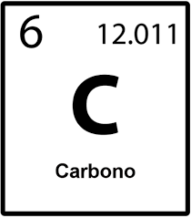

Química Orgânica e suas mudanças
Abaixo um contúdo para fins de estudo e prática da química, aqui você aprende como funciona a manipulação de materias para a produção de materias novos.
Parágrafos
Ligação de Carbonos
Uma ligação de carbono é uma ligação covalente entre dois átomos de carbono . [ 1 ] A forma mais comum é a ligação simples: uma ligação composta por dois elétrons, um de cada um dos dois átomos. A ligação simples carbono-carbono é uma ligação sigma e é formada entre um orbital hibridizado de cada um dos átomos de carbono. No etano, os orbitais são orbitais hibridizados sp 3, mas ligações simples formadas entre átomos de carbono com outras hibridizações ocorrem (por exemplo, sp 2 para sp 2 ). De fato, os átomos de carbono na ligação simples não precisam ter a mesma hibridização. Os átomos de carbono também podem formar ligações duplas em compostos chamados alcenos ou ligações triplas em compostos chamados alcinos. Uma ligação dupla é formada com um orbital hibridizado sp 2 e um orbital p que não está envolvido na hibridização. Uma ligação tripla é formada com um orbital hibridizado sp e dois orbitais p de cada átomo. O uso dos orbitais p forma uma ligação pi. [ 2 ]

Cadeias e Ramificações
O carbono é um dos poucos elementos que podem formar longas cadeias de seus próprios átomos, uma propriedade chamada catenação. Isso, aliado à força da ligação carbono-carbono, dá origem a um número enorme de formas moleculares, muitas das quais são elementos estruturais importantes da vida; portanto, os compostos de carbono têm seu próprio campo de estudo: a química orgânica.
A ramificação também é comum em esqueletos C-C. Os átomos de carbono em uma molécula são classificados pelo número de átomos de carbono vizinhos que possuem:
1. Um átomo de carbono primário tem um átomo de carbono vizinho.
2. Um átomo de carbono secundário possui dois átomos de carbono vizinhos.
3. Um átomo de carbono terciário possui três átomos de carbono vizinhos.
4. Um átomo de carbono quaternário possui quatro átomos de carbono vizinhos.
Em "moléculas orgânicas estruturalmente complexas", é a orientação tridimensional das ligações carbono-carbono nos sítios quaternários que dita a forma da molécula. [ 3 ] Além disso, sítios quaternários são encontrados em muitas pequenas moléculas biologicamente ativas, como a cortisona e a morfina. [ 3 ]

2,2,3-trimetipentano
Síntese
As reações de formação de ligações carbono-carbono são reações orgânicas nas quais uma nova ligação carbono-carbono é formada. Elas são importantes na produção de muitos produtos químicos sintéticos, como fármacos e plásticos. A reação inversa, na qual uma ligação carbono-carbono é quebrada, é conhecida como ativação da ligação carbono-carbono.
Alguns exemplos de reações que formam ligações carbono-carbono são a reação aldólica, a reação de Diels-Alder, a reação de Grignard, as reações de acoplamento cruzado, a reação de Michael e a reação de Wittig.
A síntese dirigida de estruturas tridimensionais desejadas para carbonos terciários foi amplamente resolvida no final do século XX, mas a mesma capacidade de direcionar a síntese de carbono quaternário só começou a surgir na primeira década do século XXI. [ 3 ]
Questionário
1. Ligação de carbonos O carbono é um elemento fundamental na química orgânica devido à sua capacidade de:
A. Formar apenas ligações iônicas com outros átomos.
B. Formar até quatro ligações covalentes benéficas.
C. Formar apenas duas ligações covalentes.
D. Não se ligar a outros átomos de carbono.
2. Tipos de ligação entre carbonos As obrigações entre átomos de carbono podem ser opções como:
A. Iônicas e metálicas.
B. Simples, duplas e triplas.
C. Apenas simples.
D. Nucleares e covalentes.
3. Cadeias carbônicas Uma cadeia carbônica ramificada é descrita por:
A. Possui apenas um único átomo de carbono.
B. Não possui obrigações entre carbonos.
C. Ter ramificações saindo da cadeia principal.
D. Ser composto apenas por ligações duplas.
4. Cadeia linear vs ramificada A principal diferença entre uma cadeia linear e uma cadeia ramificada é:
A. A presença de metal na cadeia ramificada.
B. A quantidade de hidrogênio na cadeia linear.
C. A existência de desvios (ramificações) na cadeia principal.
D. O número de elétrons sem carbono.
5. Síntese nutritiva Na química orgânica, a síntese de compostos refere-se a:
A. Quebra de moléculas em moléculas simples.
B. Formação de compostos orgânicos a partir de substâncias mais simples.
C. Separação de misturas úmidas.
D. Transformação de sólidos em líquidos.
Resultado